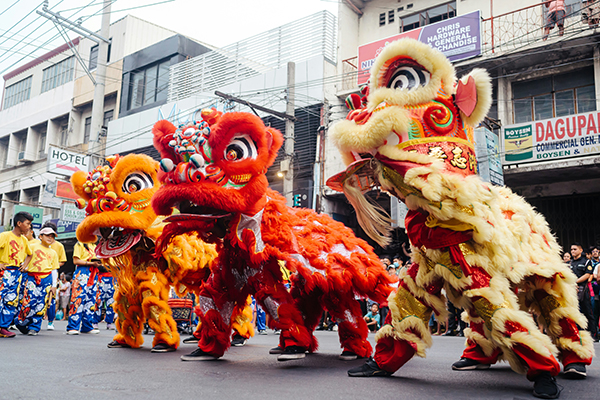
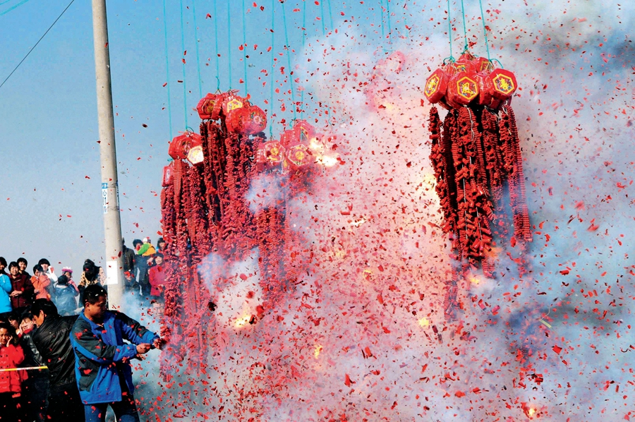

Red Envelopes

Red envelopes, symbolic gifts of money given during Lunar New Year to wish good luck, prosperity, and ward off evil spirits, typically from elders to younger generations, presented in red packets symbolizing good fortune. These tradition dates back to ancient times, evolving from charms to symbols of blessings, and always carry wishes for health and happiness.
Dragon Dancing
The dragon dance is a traditional performance and important cultural symbol, performed by a team of dancers who manipulate a long, flexible dragon puppet on poles. Performing the dance is believed to bring good fortune to the community, ward off evil spirits, and usher in blessings. The longer the dragon, the more luck it is believed to bring.
The number 4
In Chinese culture, the number 4 (四, sì) is considered unlucky because its pronunciation is very similar to the word for death (死, sǐ), leading people to avoid it in floor numbers, phone numbers, and license plates, though some regional dialects like Teochew find it auspicious.
Chinese New Year firecrackers
Chinese New Year firecrackers are a loud, festive tradition to scare away bad luck, demons, and ghosts with their cacophony. Welcoming Fortune, especially early on New Year's Day (it opens opening the "door of fortune"), invites prosperity. They symbolize the triumph of light over darkness and joy for the New Year.